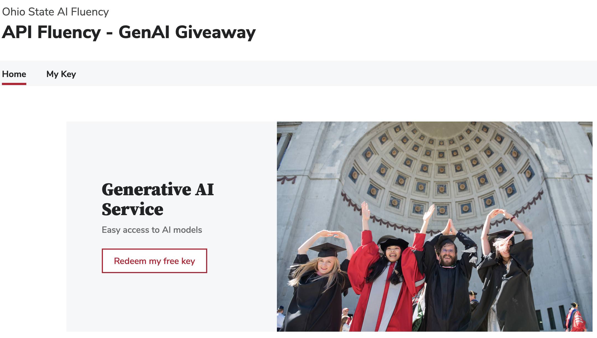
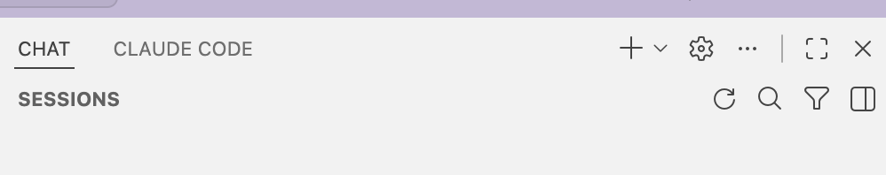
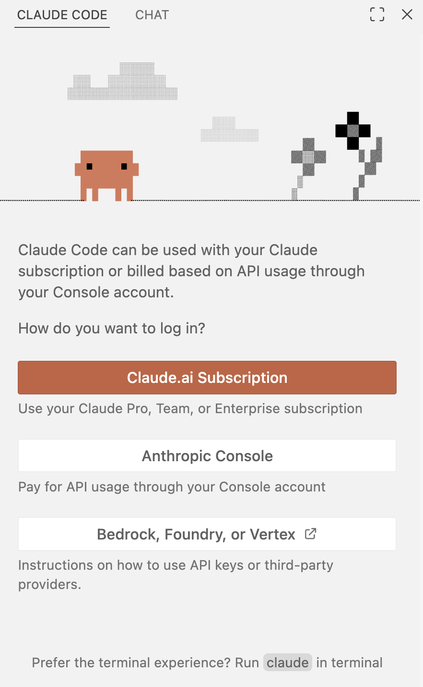
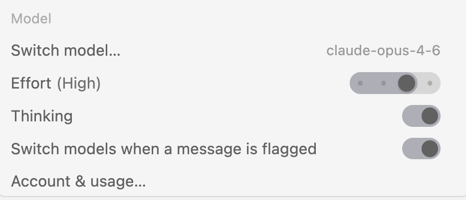
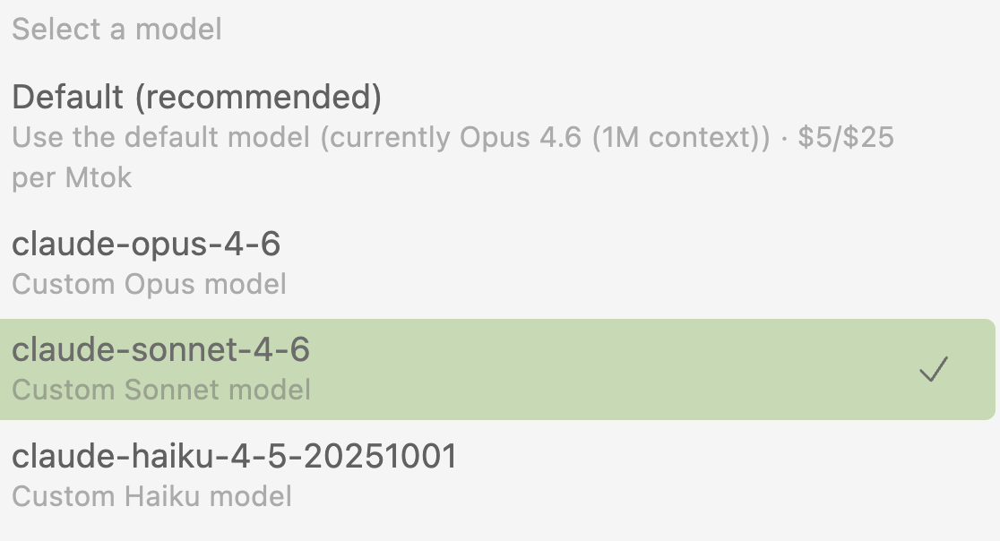
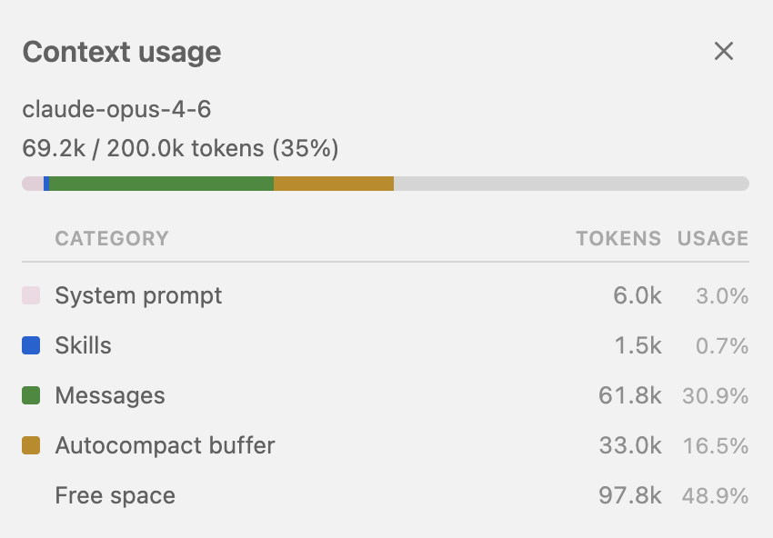
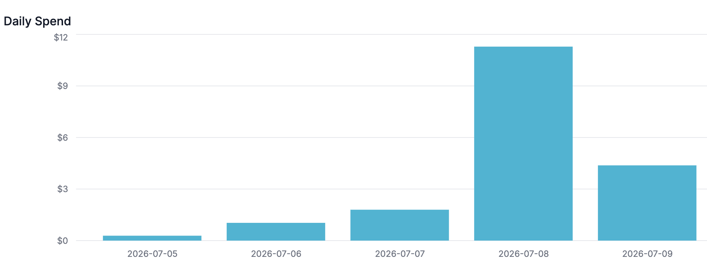
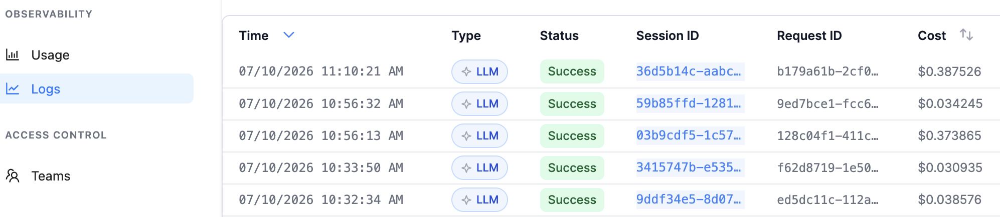
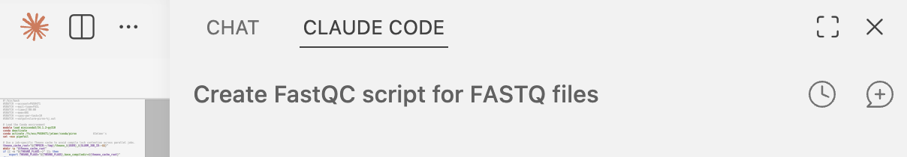

9: Agentic chat with Claude Code
Getting started with this extremely powerful tool!
![]()
This page is still subject to change
1 Introduction
Claude Code is the second of the two main AI tools we will use in this workshop. In the session on GitHub Copilot, we discussed the pros and cons of these two tools.
Unlike with GitHub Copilot, we will not use a personal account to access Claude Code. Instead, we’ll use an access key that the workshop instructors have obtained using OSU OTDI’s Generative AI Service. Moving forward, we will refer to this type of access key as an “OSU LiteLLM API key”1.
A key advantage of this approach is that it allows us to use Claude Code in a way that is approved for use with restricted institutional data (S2-S4). So, you can use it also with your own data this afternoon, regardless of whether it is public or private data.
OSU currently has a initiative where anyone at OSU can get $100 worth of AI credits via their own OSU LiteLLM API key. 🥳
This API key is valid until the end of September and can be used in the same way as we do in the workshop, as well as in other contexts that we have not shown in this workshop.
- Go to https://go.osu.edu/api-fluency and log in
- Click “Redeem my free key”

Claude Code is only approved for use with institutional data when it is used via an OSU LiteLLM API key. So, if you pay for a personal Anthropic account and use that to access Claude Code, you are not using it in an approved way.
Like with GitHub Copilot, the Anthropic product Claude Code comes in various forms, but we will use it within a VS Code extension — which we’ll set up now.
2 Setting up Claude Code
- In the Extensions view, search for “claude” and install the extension “Claude Code for VS Code”:

To authenticate to Claude Code, we will use a settings file where we tell Claude about our API key and settings associated with it. In the terminal, copy this file to your Home directory (where it will be automatically read by Claude Code):
cp /fs/scratch/PAS3454/share/settings.json ~/.claude/settings.jsonNoteWhat does the settings file contain? (Click to expand)We can’t share this file on the website in full, because it contains an API key that cannot be exposed publicly. But for your reference, the contents of this JSON settings file minus the API key (here replaced by
REPLACE_WITH_API_KEY) is as follows:{ "theme": "auto", "env": { "ANTHROPIC_BASE_URL": "https://litellm.cloud.osu.edu", "ANTHROPIC_AUTH_TOKEN": <REPLACE_WITH_API_KEY>, "ANTHROPIC_DEFAULT_OPUS_MODEL": "claude-opus-4-6", "ANTHROPIC_DEFAULT_SONNET_MODEL": "claude-sonnet-4-6", "ANTHROPIC_DEFAULT_HAIKU_MODEL": "claude-haiku-4-5-20251001", "CLAUDE_CODE_DISABLE_EXPERIMENTAL_BETAS": "1" } }A second tab should now be available in the side bar with Copilot, named “CLAUDE” — click on that (if you don’t see it, you may have to widen the side bar!):

Next to “CHAT” (i.e., GitHub Copilot), a “CLAUDE CODE” tab is now available. NoteAlternative way of opening a Claude Code window (Click to expand)Once installed, a Claude Code icon will appear in the topright of the editor pane:
Clicking this icon will also open a Claude Code window, but this one will be opened within the editor pane rather than in the sidebar.
You should for some moments see the following messages in the Claude Code window, indicating that you are not authenticated yet:

Simply wait, and if all goes well, Claude will process the settings file behind the scenes, and switch to an interface similar to the Copilot one:
 ImportantDoes the window with login options not automatically disappear?
ImportantDoes the window with login options not automatically disappear?Don’t try to log in via the options in that window, but warn the instructors and we’ll troubleshoot.
All done!
Exercise: Test that Claude Code works
In the prompt box at the bottom, go ahead and ask it a quick, simple question to test that it works.
No inspiration? Ask a classic stumbling-block question for AIs, such as “How many b’s are in the word blueberry?”
3 Getting started
3.1 The prompt box
Let’s start by taking a closer look at the prompt box, as most of the features we’ll discuss next are accessed from there — for example:
- Adding file context with the
+button. - The
/button to open the Command Menu. Manualis an indicator of the currently selected “permission mode” (the level of permissions Claude is granted for agentic actions), which can be changed by clicking on it.

There might be text just above the prompt box saying: “Prefer the Terminal experience? Switch back in Settings.” This refers to the fact that you can also also use Claude Code in the terminal (the Claude Code CLI), but we will not do that here and don’t really recommend switching.
The ghost text in the prompt box says “⌘ [or Ctrl] to focus or unfocus Claude”, which refers to switching your active cursor back and forth between the prompt box and the VS Code editor. At least for me, this doesn’t work and that seems to be a known issue.
3.2 A few prompts to get a feel for Claude Code
Write a very simple script to run FastQC on a FASTQ file
- TBA –
S09folder - DETAILS TBA – Then, have it troubleshoot the (likely)
moduleproblem.
3.3 Stopping or steering Claude mid-response
Sometimes, you realize you made a mistake in your prompt, or that Claude is going down the wrong path. If you want to take action while it is still in the process of responding, you can do so in a few ways:
Steer with a message: You can simply type a new message in the prompt box while it is responding, and it will (soon) read your message and take it into account before continuing.
The message “actually load R 4.4.0 instead” was added while Claude was responding. Pause it mid-response: You can press Esc or click the Stop button in the top right of the response box. This will stop Claude in its tracks (sometimes with a delay), and you can then send a new message to steer it in a different direction — you don’t need to repeat your original prompt.
Completely stop and rewind Pressing Esc + Esc in quick succession will stop Claude and rewind the conversation to the point before it started responding.
After pressing Esc + Esc, you can choose a point in the conversation to go back to. In this case, the conversation only consists of a single message. After selecting that message, it asks you to confirm the rewind, which in this cases involves removing the generated code in an R script.
{kind=link}
{kind=link}
{kind=link}
{kind=link}
You can also access the rewind option through the Command Menu.
4 Adding file context
Files are one of the main pieces of “context” that Claude Code uses to answer your questions. A key advantage of using AI in your editor is that relevant files are readily available, and don’t need to be uploaded or copied-and-pasted from your computer to a web interface.
4.1 Your open folder is your “workspace”
When working with Claude Code in VS Code, you should always open a folder with the VS Code “Open Folder” functionality, and have the relevant files in that folder or subfolders. We’ll refer to that folder as your “workspace” in the rest of this document2.
Typically, your workspace should be a folder for a specific research project. It is good practice to keep all files related to a project in one folder/workspace. There are a number of reasons for this, including to benefit reproducibility and to effectively use in-editor AI like Claude Code.
To start with, your entire workspace is what we may call the “implicit context” for the chat. When it considers that useful for a given prompt, Claude will often search your workspace for similar or relevant files. However, it is often better to explicitly add context to the chat, which you can do in a number of ways, as we will discuss below.
4.2 Adding files that are open in the editor
The easiest way to add file context is simply having the relevant file open in the editor: Claude will automatically add it. (When you have multiple tabs open, Claude will add the file that is “active”, i.e., the one whose content is currently showing3)
With our fastqc.sh script still open, you can see in the prompt box that Claude has added this file as context:
[SCREENSHOT TBA]
If you want to remove the active file from the context, click on its name below the prompt box, and it will be grayed out and removed from the context:
[SCREENSHOT TBA]
Additional considerations:
If you select one or more lines of code in the editor, Claude will automatically add that selection as context. You could for example ask, within a much longer script, “these lines of code don’t seem to be working, can you help me fix them?”
If you want to add multiple files as context, you can use the Option/Alt + K shortcut, which adds the currently selected file (or text) to the prompt box and keeps it there, even if you switch active files or add other files as context.
Files can also be added by typing
@in the prompt box, followed by part of the file name. This will bring up a list of files in your workspace that match, or even a full list of files if you just type@and pause:
If you have lots of files in your workspace, typing part of the name is often easier than scrolling. These partial names will also match files in subfolders, so you can type
@fastqcto find thefastqc.shscript in theS09folder, for example.
Exercise: Add context to the chat
- Details TBA
- Practice with adding multiple files, e.g. a script AND a Slurm file
+ button (Click to expand)
While I find that this is rarely needed, you can add files that are not open in the editor as context by clicking the + icon below the prompt box.

+ button in the Claude Code prompt box.- This also allows you to upload files from your local computer with the
Upload from computerbutton4. - The
Add contextbutton is equivalent to typing@in the prompt box.
Need to add a file as context but it is not in your workspace?
If you want to add a file as context that is not in your workspace, you can’t select it from the Add context pop-up window5. Instead, the easiest way is again to simply open the file in the editor (e.g., File > Open File..., and then you can enter any path).
5 Permission modes
On the right-hand side of the prompt box is the Permission Modes indicator. This sets the permission level that Claude has to perform actions like editing files and running commands, and can be toggled between:
Manual: Claude asks permission for each action.
Edit automatically: Claude makes edits to files and runs basic commands without asking for permission.
Plan mode: Claude writes a plan that is then opened as a rendered Markdown document, and which you can approve or modify.
Auto mode: Claude determines on its own whether to ask for permission or not for specific actions, or to write a plan. In this mode, it is also more likely to ask you for clarifying questions. If you switch to Auto Mode, you should see something like the following:

Exercise: Try out the permission modes
TBA
6 Model selection and parameters
From the Claude Code window’s command menu (opened by clicking the icon in the Claude Code prompt box shown on the left), you can control which LLM model is used and how it behaves:

Switch model...: Lets you pick which Claude model to use. The main trade-off is between speed/cost and capability:- Opus is likely to be the default model, and is the most capable model, but slower and more expensive. Best reserved for complex multi-step reasoning or tricky debugging.
- Sonnet is fast, capable, and much cheaper. Should be sufficient for most coding tasks like writing shell scripts and pipelines.
- Haiku is the fastest and cheapest, but less capable. Fine for simple questions or quick edits.

With our LiteLLM setup, these are the only models you should be seeing. Switch to Sonnet as the default for workshop tasks — it will be faster, cheaper, and plenty capable for writing bioinformatics scripts. You can always switch back for individual tasks if you find Sonnet is struggling with a problem.
Another way to think about model usage and switching: Use Opus to plan and Sonnet to execute the plan.
Effort: Controls how much effort the model puts in before responding: “Low” / “Medium” / “High” / “Max”. Higher effort means more thorough reasoning but slower responses. For straightforward tasks like “write a Slurm header” or “add a comment”, Low or Medium effort is fine. For debugging a failing pipeline or designing a workflow, High or Max effort helps.
Switch to Medium effort for now.
Thinking toggle: When enabled, Claude performs explicit step-by-step reasoning before responding, which improves quality on complex tasks (at the cost of more tokens and time). The thinking is shown in a collapsible block above the response, which can be useful for understanding why it made certain choices.
“Switch model when a message is flagged”: If Claude refuses a request or flags it as potentially problematic, this setting can automatically retry with a different model.
7 The context window and token usage
7.1 The context window
The so-called context window is a key concept in using LLMs like Claude Code. The context window is the amount of text that the model can “see” at once, and it is measured in tokens (roughly 3/4 of a word). The context window includes:
- Input tokens:
- The user’s prompt(s) across the entire conversation
- Any files added to the conversation
- Always-loaded context such as system instructions and “skills” (you’ll learn more about skills in the next session)
- Output tokens:
- The model’s responses across the entire conversation
- The model’s “thinking” (if enabled)
- Input and output tokens:
- The model’s tool use: Claude spends tokens each time it reads a file, searches your workspace, or runs a command, since the results of those actions are fed back into the conversation.

Different models have different context window sizes, with many current models having a 1 million token context window size.
7.2 What happens when the context window fills up?
When the context window fills up, the model will start to “forget” earlier parts of the conversation.
More generally, performance degrades as the context window fills up, and hallucinations and other errors become more likely.
Larger context windows will also slow down responses and increase costs.
For these reasons, it is important to monitor and manage context usage.
A related problem that can be useful to be aware of is that the model is most likely to “lose track” of the middle of a long conversation, when the context window is large but not yet full.
7.3 Monitoring context usage
So-called slash-commands or simply commands are shortcuts that can be used in the prompt box to perform various actions. The /context command shows a visualization of the context token usage in the current conversation:

Try it out: Type /context in the prompt box and hit Enter to see the context usage for your current conversation.
7.4 Token usage
Above, we talked about token usage in the context of the context window. But token usage is also important for another reason: cost. Therefore, the following content about “context engineering” (managing context) is as relevant for cost as it is for performance.
One important aspect of token usage is that output tokens are more expensive than input tokens. For example, for our current default Opus model, the text in the screenshot below indicates that 1 M input tokens cost $5, while 1 M output tokens cost $25.
Because tool calls and thinking can consume far more tokens than the visible chat text, a short-looking question that requires searching many files or a lot of reasoning can still be relatively expensive. This is part of why model choice and effort level (discussed above) matter for cost and speed, not just response quality.
If you had a personal Anthropic account, usage tracking in dollars would be available right in the Claude Code interface with a slash-command. But with our OSU LiteLLM API key, this is not available.
With an OSU LiteLLM API key, usage can be tracked on the LiteLLM dashboard. At the moment, you are using the API key provided by us, so you can’t access this — but you will be able to do so if you get your own OSU LiteLLM API key.
This dashboard e.g. shows a dollar-wise daily usage bar chart (“Usage” page), and a table of all requests that includes the exact amount spent on each request (“Logs” page).


To reduce usage costs, you can consider switching to AI tools in your browser when you don’t need agentic capabilities like file editing and command execution. For example, questions about general bioinformatics concepts and software usage and options can be answered by a browser-based LLM like Google Gemini via an OSU login
On the other hand, going back-and-forth depending on the context does mean that you don’t have all relevant chat history in one place.
7.5 Context engineering
“Context engineering” is the practice of managing the context window to improve performance and reduce costs.
Quick tips
Here, we will focus on strategies related to managing the actual chat conversation, but a couple other strategies are worth mentioning briefly:
Don’t load unnecessary files as context.
Explicit is better than implicit: For example, if you know which files are relevant to your question, explicitly add them as context rather than letting Claude search the entire workspace.
(We haven’t covered these yet, but you should similarly be mindful of context that’s always loaded, such as
CLAUDE.mdfiles, skills, and MCPs.)
Not only does being explicit prevent Claude from making assumptions that may be wrong, it also prevents it from going around figuring things out for itself — which, while sometimes impressive to witness, is slow and expensive!
Don’t let your conversation get too long
First of all, to be clear: Claude and any other LLM will have no memory whatsoever of your previous conversations when you start a new chat.
Therefore, you may often be inclined to keep the same chat going for a long time, so that Claude can “remember” what you were working on. But as we’ve discussed, lots of context is costly and can eventually degrade performance.
Side note: Don’t continue the same chat for clearly unrelated tasks, even when the conversation is not long at all. Claude can get completely confused if you switch topics mid-conversation.
Starting a new chat is therefore often a good idea, and you can do so by clicking the Chat icon with + in the top right of the Claude Code window.
Here are two ways to have useful conversations despite length limitations:
- Break your work into smaller tasks and have separate chats for each task.
- Load “external memory” via files that summarize your project and its current state (session 10.
The Clock icon (left of new chat icon) shows a list of your previous chats, so you can reopen and continue an earlier conversation.
Clear conversation: (
/clear) Wipes the current chat history and starts fresh, but keeps the same chat “slot” (as opposed to starting a genuinely new chat, see below). Useful when a conversation has gotten long or gone down an unproductive path, and you want Claude to stop being influenced by it, without leaving behind a separate chat you’d need to find again later. This can also be invoked by typing/clearin the prompt box./compact— Summarize (“compact”) the conversation so far into a shorter version to reduce token usage and speed up responses (this is related to the “autocompact buffer” in the context visualization).Claude icon (left, in the editor): Opens an entirely new Claude Code window (a separate pane), which is useful if you want to have multiple chats open side by side at the same time — for example, to run a long task in one window while asking a quick question in another.

8 Your turn
8.1 Explore planning mode and models/effort
In this exercise, you’ll ask Claude to plan a quality control workflow for the RNA-seq data, first quickly and then more carefully, so you can compare how model choice and effort level affect the depth and quality of the plan.
Ask Claude to plan a QC workflow for the FASTQ files in the iqbal/fastq dir. Here is two suggested prompts, but you can modify them or use other prompts if you like:
Write a plan to perform QC and read preprocessing steps for the FASTQ files
in `iqbal/fastq`. At a minimum, the workflow should assess read quality,
and trim low-quality bases and adapter sequences.
We will run this on OSC using Slurm with project PAS3454.Write a plan for aligning trimmed FASTQ files to the rice reference genome
in `iqbal/ref`, and then counting the aligned reads to produce a gene count table.
We have both the genome FASTA and a GTF annotation file.
Which aligning and counting tool combination would you recommend, and why?For each prompt, do the following:
Round 1 — fast:
- Switch to Haiku (or Sonnet) with Low effort, and make sure Plan mode is active.
- Send the prompt above.
- Read the plan Claude produces. Note things like: How many steps does it propose? Does it name specific tools? Does it mention anything about Slurm job parameters? Does it flag any uncertainties or ask clarifying questions?
Round 2 — exhaustive:
- Start a new chat (so Round 1’s plan doesn’t influence this response).
- Switch to Opus with High or Max effort, keeping Plan mode active.
- Send the same prompt.
- Read the plan again with the same questions in mind.
Discuss:
- What differences do you notice between the two plans?
- How would you verify that the plan is reasonable and complete?
- How does it compare to what Iqbal et al. (2025) actually did in their workflow?
- Does the “lazy” setting seem good enough here?
8.2 A troubleshooting example
TBA – likely provide a script that produces errors, and ask Claude to troubleshoot it.
8.3 Other exercise ideas - TBA
Additional (FastQC) script prompts:
Add functional bells and whistles to the script
Also report the time it took to run the script
Add a
README.mdfile for theiqbaldata and populate it? And/or for your own analysis?R example?
Write an R script to visualize the data in iqbal/meta.tsv, which should produce PNG files. Run the R script. Load the R module with “module load gcc/12.3.0 R.4.5.0”
References
Footnotes
It runs via the LiteLLM service, and these kind of keys in general are called “API keys”.↩︎
You may also run into the word “codebase” in documentation and tutorials, which refers to the same thing in this context.↩︎
Or, if you have side-by-side editor panes, the one where the cursor is currently located.↩︎
Interestingly, when you’re not connected to OSC, this button allows you to select files from outside of your workspace, but when connected to OSC, it (only) allows you to upload files from your local computer.↩︎
If you were working entirely on a local computer, you could use the
Upload from computerbutton to upload it, but when at OSC, this also connects to your local computer and not to files at OSC outside of your workspace.↩︎